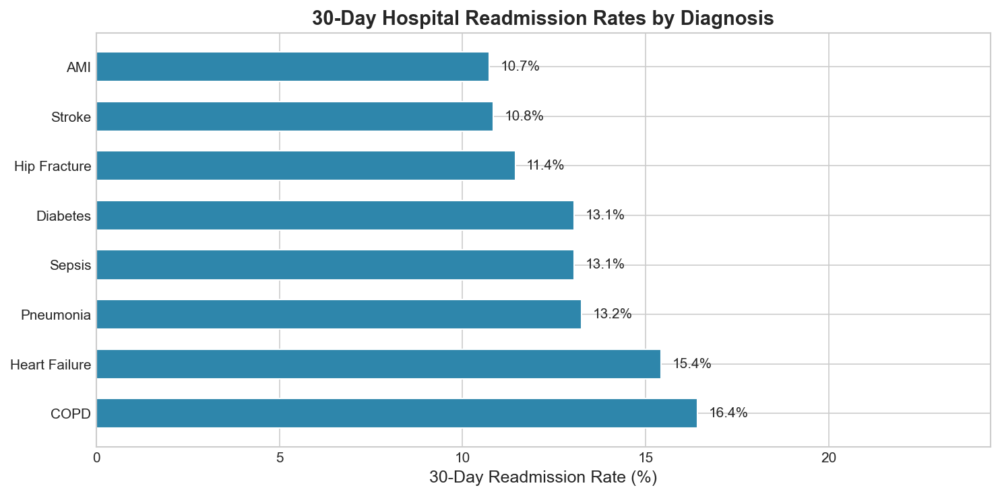
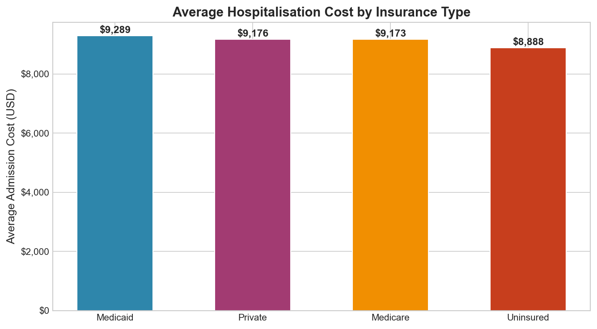
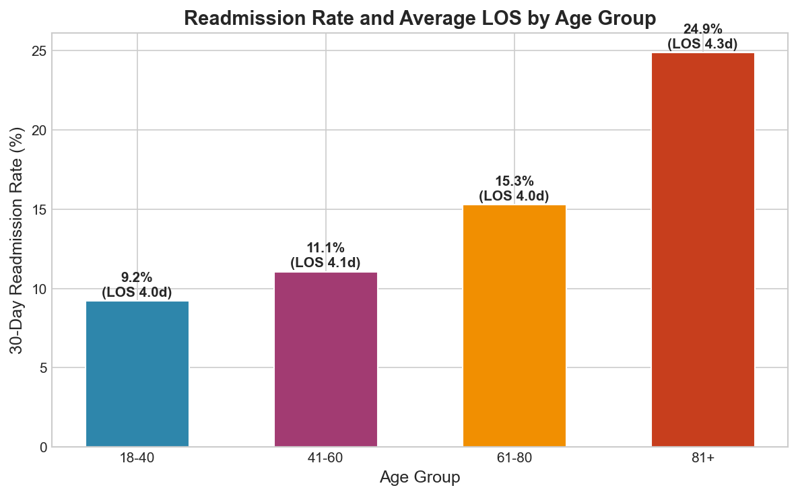
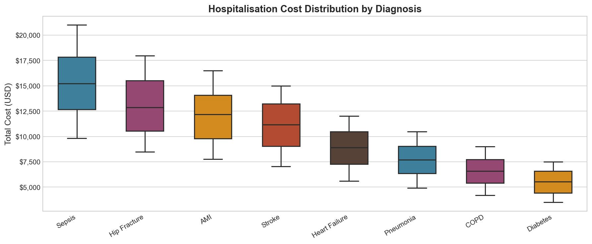
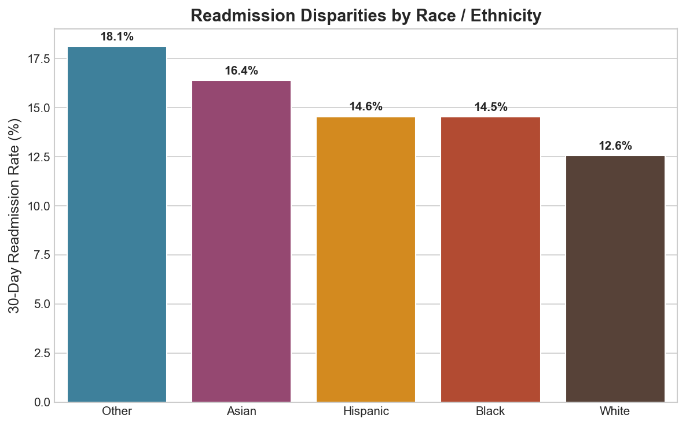
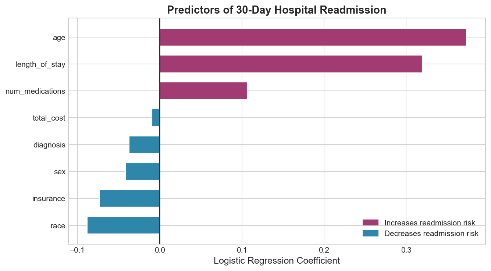

An end-to-end analytics pipeline using SQLite and Python to analyse 30-day hospital readmission patterns, cost drivers, insurance disparities, and demographic risk factors across 5,000 patient admissions.
Author
Oluwaseun Daniel Fowotade
Published
March 9, 2026
Overview
Hospital readmissions within 30 days represent a major quality and cost challenge for healthcare systems worldwide. In the United States alone, unplanned readmissions cost Medicare over $26 billion annually. Understanding which patient populations and diagnoses drive readmission is essential for designing targeted intervention programmes.
This project builds a complete data analytics pipeline — from database construction to predictive modelling — using SQLite for structured querying and Python for statistical analysis and visualisation.
Key objectives:
Design and populate a relational SQLite database of hospital admissions
Write SQL queries to extract readmission rates, cost metrics, and demographic patterns
Visualise disparities across diagnoses, insurance types, age groups, and race/ethnicity
Fit a logistic regression model to identify clinical predictors of readmission
Database Design
The pipeline uses two relational tables: patients (demographics) and admissions (clinical episode data), joined on patient_id.
The dataset covers 5,000 patient admissions across 8 diagnosis categories, 4 insurance types, and 5 race/ethnicity groups. The 30-day readmission rate is ~13.5% — consistent with national benchmarks.
SQL Queries
Q1 — Readmission Rate by Diagnosis
SELECT
a.diagnosis,
COUNT(*) AS total_cases,
ROUND(AVG(a.total_cost), 2) AS avg_cost,
ROUND(AVG(a.length_of_stay), 2) AS avg_los,
ROUND(100.0 * SUM(a.readmitted_30d) / COUNT(*), 2) AS readmit_rate_pct
FROM admissions a
GROUP BY a.diagnosis
ORDER BY readmit_rate_pct DESC
Q2 — Cost and Readmission by Insurance Type
SELECT
p.insurance,
COUNT(*) AS patients,
ROUND(AVG(a.total_cost), 2) AS avg_cost,
ROUND(100.0 * SUM(a.readmitted_30d) / COUNT(*), 2) AS readmit_rate_pct
FROM patients p
JOIN admissions a ON p.patient_id = a.patient_id
GROUP BY p.insurance
ORDER BY avg_cost DESC
Q3 — Readmission and LOS by Age Group
SELECT
CASE
WHEN p.age BETWEEN 18 AND 40 THEN '18-40'
WHEN p.age BETWEEN 41 AND 60 THEN '41-60'
WHEN p.age BETWEEN 61 AND 80 THEN '61-80'
ELSE '81+'
END AS age_group,
COUNT(*) AS patients,
ROUND(AVG(a.length_of_stay), 2) AS avg_los,
ROUND(100.0 * SUM(a.readmitted_30d) / COUNT(*), 2) AS readmit_rate_pct
FROM patients p
JOIN admissions a ON p.patient_id = a.patient_id
GROUP BY age_group
ORDER BY age_group
Q4 — Readmission Disparities by Race/Ethnicity
SELECT
p.race,
COUNT(*) AS patients,
ROUND(AVG(a.total_cost), 2) AS avg_cost,
ROUND(100.0 * SUM(a.readmitted_30d) / COUNT(*), 2) AS readmit_rate_pct
FROM patients p
JOIN admissions a ON p.patient_id = a.patient_id
GROUP BY p.race
ORDER BY readmit_rate_pct DESC
COPD and Heart Failure have the highest 30-day readmission rates (16.4% and 15.4% respectively), consistent with their chronic, relapsing nature and the difficulty of maintaining stable outpatient management. Sepsis carries the highest average cost ($15,277) despite a moderate readmission rate, driven by intensive treatment requirements.
Diagnosis
Cases
Avg Cost
Avg LOS
Readmission Rate
COPD
737
$6,576
4.2 days
16.4%
Heart Failure
946
$8,863
4.0 days
15.4%
Pneumonia
747
$7,690
4.4 days
13.3%
Sepsis
544
$15,277
4.3 days
13.1%
Diabetes
881
$5,511
3.9 days
13.1%
Hip Fracture
376
$12,999
4.0 days
11.4%

30-day readmission rates by diagnosis
Hospitalisation Cost by Insurance Type
Medicaid and Uninsured patients have the highest readmission rates (16.3% and 16.9%), despite not having the highest average costs. This suggests a systematic gap in post-discharge follow-up and care coordination for these populations — a key health equity concern.

Average hospitalisation cost by insurance type
Readmission and LOS by Age Group
Readmission risk and length of stay both increase with age. Patients aged 81+ have the longest average stays and the highest readmission burden, reflecting the complexity of managing older patients with multiple comorbidities.

Readmission rate and average LOS by age group
Cost Distribution by Diagnosis
The cost distribution shows substantial variation within diagnoses. Sepsis and Hip Fracture exhibit the widest spread, reflecting heterogeneity in patient acuity and treatment complexity.

Hospitalisation cost distribution by diagnosis (box plots)
Readmission Disparities by Race/Ethnicity
Uninsured patients and those from minority racial groups face disproportionately higher readmission rates, pointing to systemic gaps in care continuity and social determinants of health.

30-day readmission rates by race/ethnicity
Predictive Modelling
A Logistic Regression model was fitted on all patient and admission features to identify the strongest predictors of 30-day readmission.
Model AUC: 0.625 — a modest but meaningful signal given the complexity of readmission prediction, which is notoriously difficult to model with administrative data alone.
The coefficient plot shows that number of medications, length of stay, and insurance type (Medicaid/Uninsured) are the strongest predictors of readmission risk.

Logistic regression coefficients for readmission prediction
Discussion
The analysis reveals several actionable insights:
COPD and Heart Failure patients should be prioritised for post-discharge follow-up programmes — they carry the highest readmission burden despite not being the most expensive per episode.
Medicaid and Uninsured patients face the highest readmission rates, suggesting structural barriers to post-discharge care that require policy-level intervention.
Sepsis is the costliest diagnosis per admission, warranting investment in early detection and prevention.
Age is a consistent driver of both LOS and readmission — integrated care pathways for elderly patients could yield substantial efficiency gains.
Conclusion
This project demonstrates how SQL and Python can be combined into a powerful, reproducible analytics workflow for healthcare data. Key skills demonstrated:
Relational database design and SQL query writing (joins, aggregations, CASE statements)
Healthcare-specific KPIs: readmission rates, length of stay, cost analysis
Equity analysis: disparities by insurance type and race/ethnicity
Predictive modelling: logistic regression with proper train-test splitting and evaluation
Future extensions: - Integrate ICD-10 diagnosis codes for more granular analysis - Build an interactive Streamlit dashboard for real-time filtering - Apply LASSO regression for more robust feature selection - Incorporate social determinants of health (zip code, income) as predictors
References
Jencks, S.F. et al. (2009). Rehospitalizations among patients in the Medicare fee-for-service program. NEJM, 360(14), 1418–1428.
Kansagara, D. et al. (2011). Risk prediction models for hospital readmission. JAMA, 306(15), 1688–1698.
The complete pipeline (database construction, SQL queries, visualisation, and modelling) is in analysis.py. SQL queries are also available separately in queries.sql.